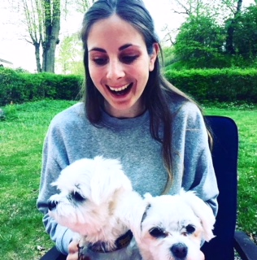

Om mig
Jag heter Karolina Sturén och är en kreativ projektledare inom design. Egentligen är jag ekonom i grunden och älskar att analysera och se resultat lika mycket som jag vill att saker ska se bra ut. Andra saker jag gillar är hundar. På bilden ser ni mig och Fredman och hans kompis Lilly som jag hänger med när Fredman inte solar sig i Singapore. Jag spenderar mina dagar som kreativ projekt- och produktionsledare på webbbyrån Afonso i Stockholm. Vi är ett gäng som sitter i Hornstull, Tidaholm och Sao Paulo, med kunder i Sverige, USA och Portugal.